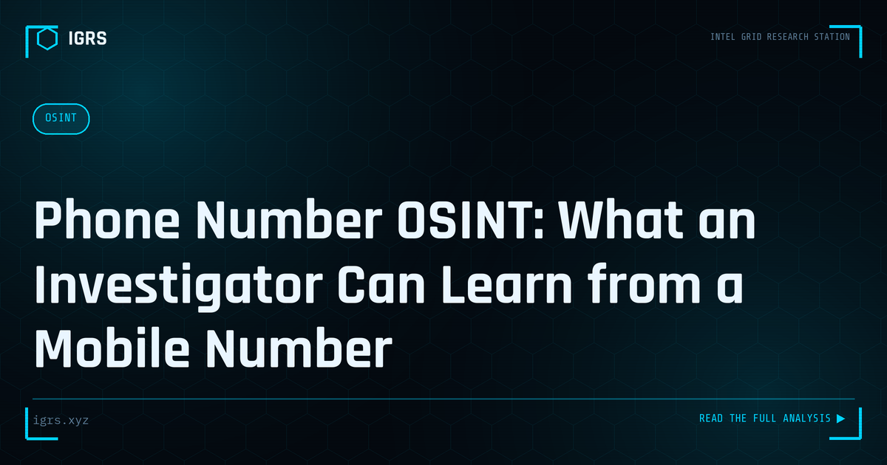

Phone Number OSINT: What an Investigator Can Learn from a Mobile Number
| File No. | IGRS-048/2026 |
| Subject | Legal OSINT methodology for phone number investigation without accessing protected telecom records |
| Category | OSINT Fundamentals |
| Author | Manuj Kumar Pandey |
| Published | 2026-04-30 |
| Reading time | 6 minutes |
A mobile number is one of the most information-rich identifiers in an investigation. What can be determined from open sources, what requires legal process, and what the limits are.
The investigative value of a phone number
In India, mobile numbers are linked to Aadhaar, bank accounts, UPI, government portals, social media, delivery services, and professional directories. A mobile number is often the starting point for a comprehensive subject profile. However, investigation sources divide sharply: public (no legal process needed) and restricted (requires legal authority).
Open-source investigation of phone numbers
Available without legal process: Caller-ID databases — Truecaller being dominant in India — aggregate crowd-sourced contact book entries to associate names with numbers. Not authoritative, but provides a starting point. Social media search: most platforms allow search by phone number or display numbers on profile pages. Breach data: paste sites and breach dumps often contain numbers with associated email addresses, revealing linked accounts. Business directories (Just Dial, India Mart) list contact numbers associated with business names and addresses.
Truecaller intelligence
Beyond name association, Truecaller reveals the carrier (narrowing geography), account type (business vs personal), and spam report count and category. A number heavily reported as "bank fraud" or "telecom scam" provides investigative context even when the subscriber's identity is protected. The spam report count and recency indicate active vs dormant use.
What requires legal process
Subscriber identity — the name and address of the person to whom a number is registered — requires a Section 91 BNSS notice to the relevant operator (Jio, Airtel, Vi, BSNL). Call detail records (CDR) — all calls made and received, duration, approximate tower location — require a separate court order or Section 92 BNSS authorization.